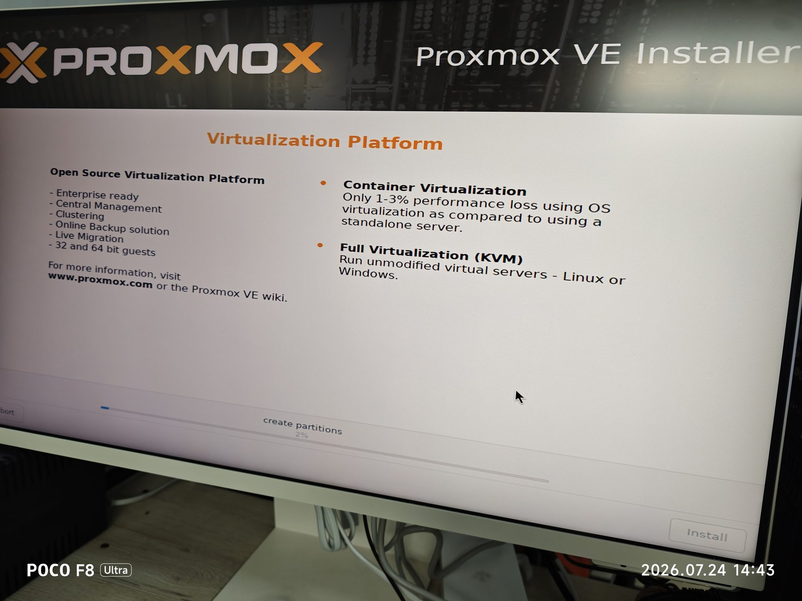
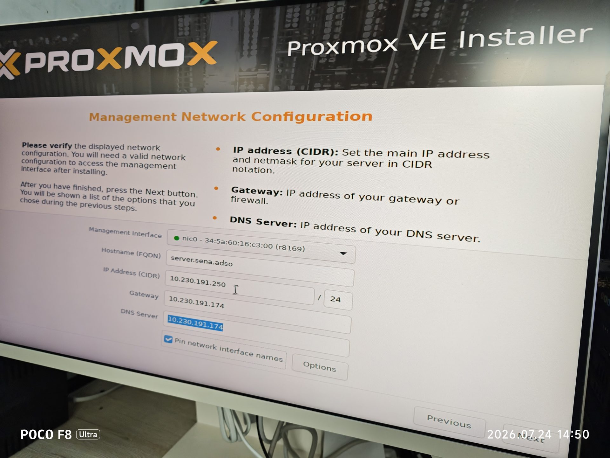
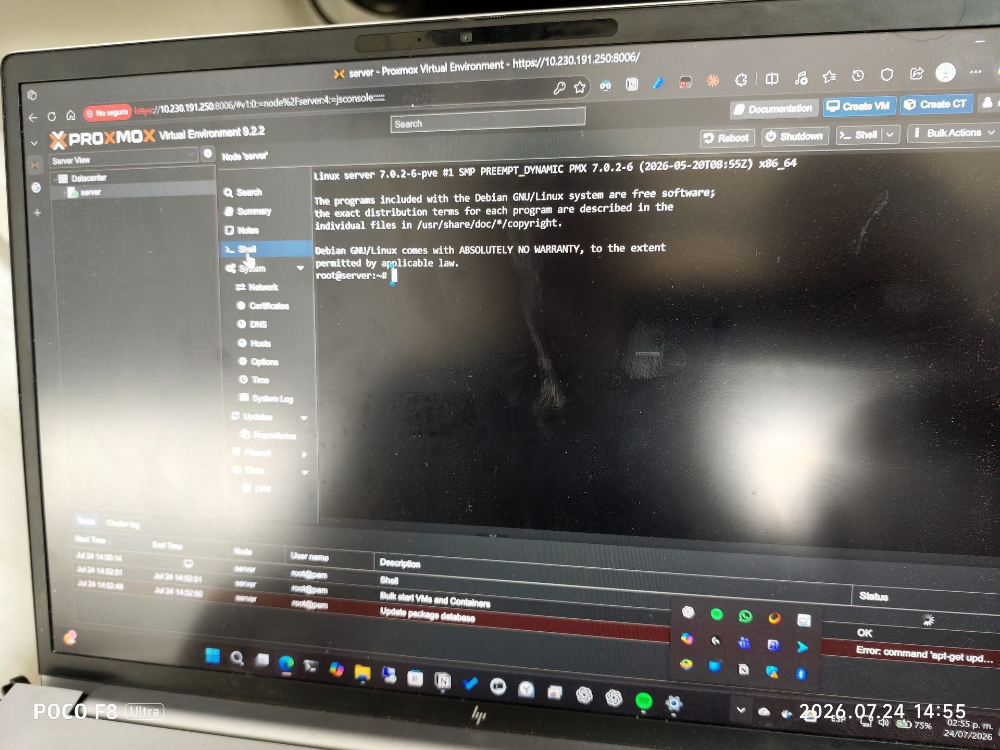
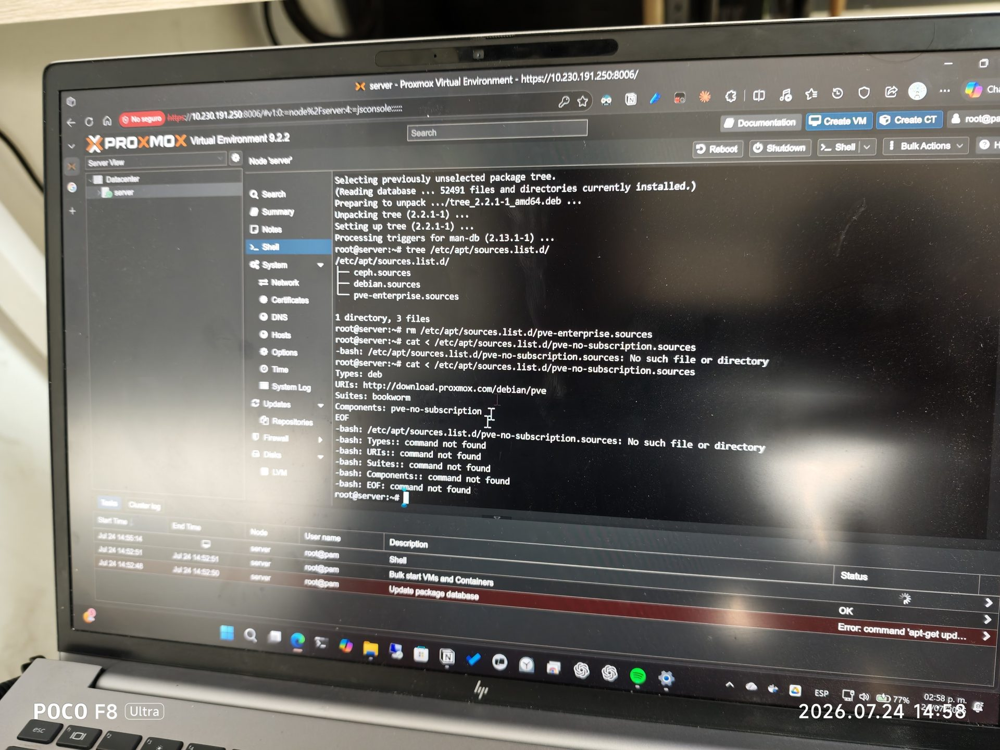
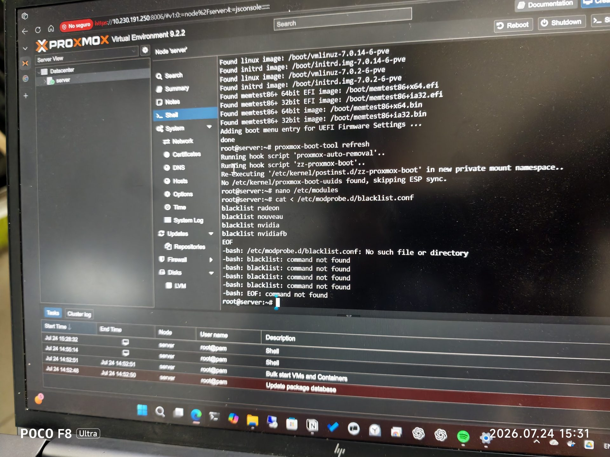
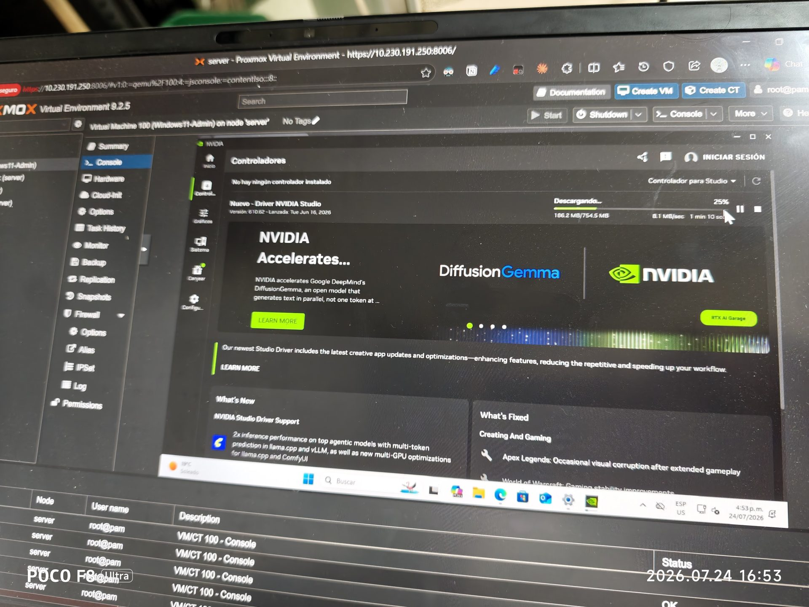
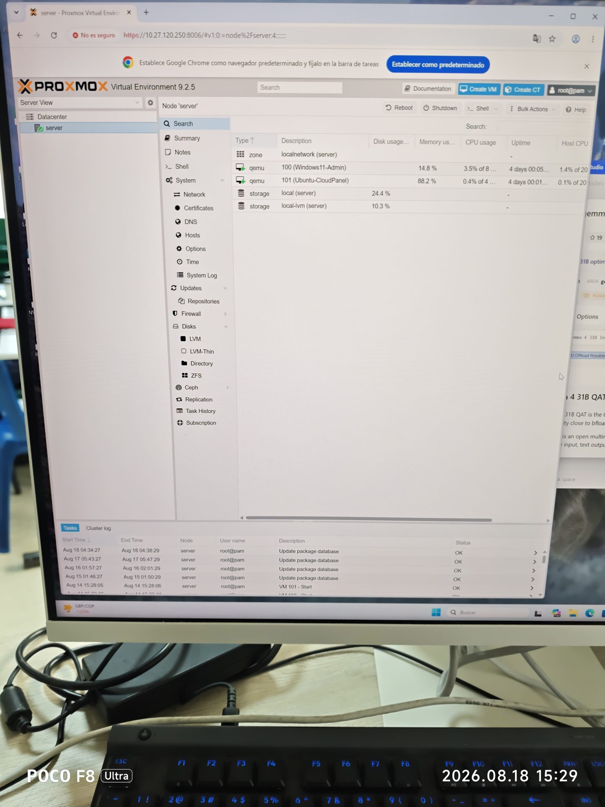
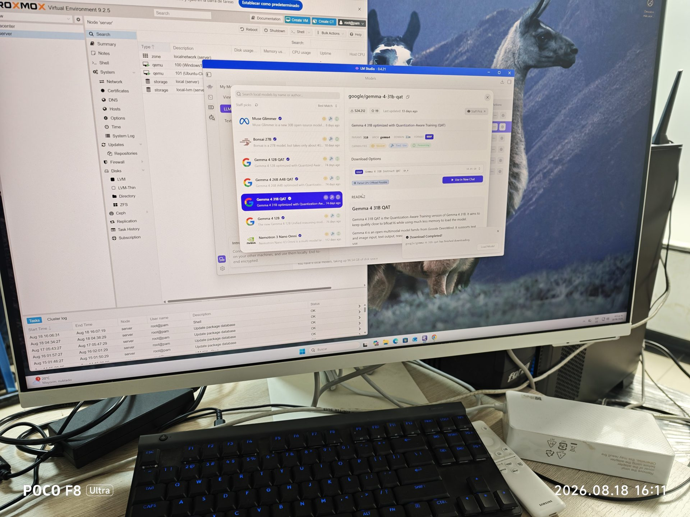
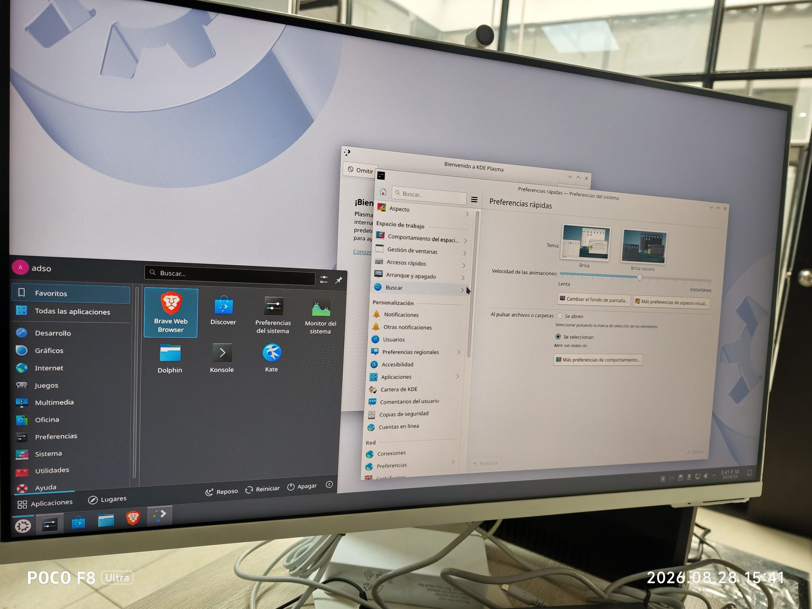
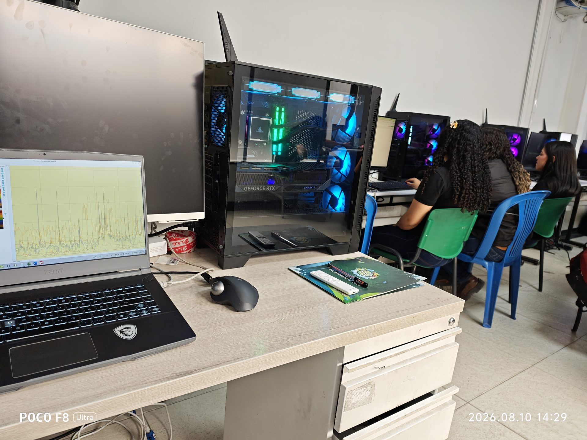

Ficha Técnica y Vinculación Curricular
Alineación con el catálogo de formación profesional integral del SENA
🎓 Programas de Formación Beneficiarios:
- Técnico en Sistemas Teleinformáticos (Código: 233108): Competencia en soporte a la infraestructura de TI, mantenimiento de servidores locales y gestión de sistemas operativos de red.
- Tecnólogo en Gestión de Redes de Datos (Código: 228183): Competencia en administración de servicios de telecomunicaciones, virtualización empresarial, segmentación VLAN y direccionamiento de capa 2/3.
🎯 Resultados de Aprendizaje del Programa (RAP):
- RAP 1: Implementar soluciones de virtualización tipo 1 (bare-metal) optimizando el uso de recursos de cómputo, almacenamiento y redes según requerimientos institucionales.
- RAP 2: Configurar subsistemas de traducción de hardware (IOMMU / VT-d / AMD-Vi) y asignación directa de periféricos PCIe (Passthrough) para cargas de procesamiento masivo.
- RAP 3: Desplegar y administrar servicios telemáticos en sistemas operativos Linux Server y Windows Pro integrando agentes de telemetría QEMU y políticas de red bridge.
Hipervisores Tipo 1 vs Tipo 2 & Arquitectura Proxmox VE 9
Fundamentos de virtualización de nivel empresarial, KVM/QEMU y núcleo Debian 13 (Trixie).
Arquitectura Conceptual: Tipo 1 (Bare-Metal) vs Tipo 2 (Hosted)
Por qué el Ambiente 205 seleccionó Proxmox VE / KVM para cómputo de alto desempeño
Hipervisor Tipo 1 (Bare-Metal)
Proxmox VE 9 / KVMVentajas clave en el Ambiente 205: Se ejecuta directamente sobre el hardware físico. El hipervisor toma control exclusivo de las extensiones de procesador (Intel VT-x/VT-d o AMD SVM). Overhead inferior al 1.5%, latencias de milisegundos en I/O de disco y capacidad nativa de desviar buses PCIe completos mediante el controlador VFIO.
Hipervisor Tipo 2 (Hosted / Alojado)
VirtualBox / VMware WorkstationLimitaciones técnicas: Debe solicitar recursos a través del planificador y la pila de controladores del sistema operativo base. Introduce una doble capa de traducción, degradación de memoria de hasta el 18%, latencias de interrupción impredecibles e imposibilidad absoluta de ceder una GPU dedicada por passthrough directo a nivel de silicio.
| Criterio Técnico | Hipervisor Tipo 1 (Proxmox VE 9 / KVM) | Hipervisor Tipo 2 (VirtualBox / Workstation) |
|---|---|---|
| Acceso al Hardware | Directo en Ring 0 (Modo VMX Root) | Indirecto mediado por llamadas al kernel anfitrión |
| Overhead de Cómputo CPU | < 1.5% (Casi imperceptible, ideal para IA) | 8% a 22% (Dependiendo de la concurrencia y drivers) |
| Passthrough de GPU PCIe | Total y nativo mediante controladores vfio-pci |
No soportado o emulado mediante shaders 3D virtuales lentos |
| Sistemas de Archivos | OpenZFS 2.3 con compresión LZ4, TRIM y snapshots atómicos | Archivos monolíticos (.vdi, .vmdk) sobre sistema de archivos host |
| Gestión y Automatización | Web GUI nativa en puerto 8006, CLI qm/pvesh y API REST |
Interfaz gráfica de escritorio local en ventana de usuario |
Arquitectura del Nodo Proxmox VE 9 sobre Debian 13 (Trixie)
Pila de software de bajo nivel instalada en la estación de trabajo del Ambiente 205
La versión 9 de Proxmox VE implementada en el proyecto SENNOVA adopta como base el sistema operativo Debian 13 (Trixie) acompañado de un kernel empresarial optimizado Linux 6.14.x-pve. Este kernel incorpora soporte nativo para los aceleradores neuronales integrados (NPU), la programación híbrida de núcleos de rendimiento (P-Cores) y núcleos de eficiencia (E-Cores) de los procesadores Intel Core Ultra 7 265K, así como la compatibilidad con el bus PCI Express 5.0.
/etc/pve con replicación en tiempo real y bloqueo mutuo.Instalación, Repositorios y Configuración de Red
Habilitación del repositorio sin suscripción, actualización atómica y arquitectura de puente vmbr0.
Gestión de Repositorios Oficiales Proxmox VE 9
Eliminación de repositorios de pago y activación comunitaria 'pve-no-subscription'
Al desplegar Proxmox VE en un centro de formación tecnológica pública como el SENA Centro Minero, el instalador configura por defecto el repositorio corporativo comercial (pve-enterprise), el cual requiere una clave de suscripción paga. Para mantener el nodo permanentemente actualizado con parches de seguridad y paquetes estables sin incurrir en bloqueos de autenticación 401 Unauthorized, se debe comentar el repositorio comercial y habilitar la rama pve-no-subscription.
apt dist-upgrade (o apt full-upgrade) en lugar de un apt upgrade estándar, debido a que las dependencias críticas del núcleo (meta-paquetes de QEMU, ZFS y Ceph) requieren la instalación o reemplazo dinámico de paquetes dependientes.
Infraestructura de Red Virtual: Bridge vmbr0 y Direccionamiento
Conmutación virtual de capa 2 y migración a la subred institucional 10.27.120.250/24
En la arquitectura del servidor Proxmox, las máquinas virtuales no se conectan directamente a la tarjeta de red física (NIC), sino a un puente virtual de Linux (Linux Bridge) denominado vmbr0. La interfaz física 2.5 GbE (enp5s0) opera como un puerto esclavo del puente sin dirección IP propia, permitiendo que tanto el hipervisor como todas las VMs compartan el mismo enlace físico al switch Ubiquiti del Ambiente 205 con aislamiento de dominios de difusión.
📡 Parámetros de Red del Nodo Proxmox:
- Dirección IP del Hipervisor:
10.27.120.250 - Máscara de Subred:
255.255.255.0 (/24) - Puerta de Enlace (Router MikroTik):
10.27.120.254 - Puerto de Administración Web GUI:
8006 (HTTPS) - URL de Acceso:
https://10.27.120.250:8006/
⚙️ Configuración Netplan YAML (VMs Ubuntu):
Archivo /etc/netplan/00-installer-config.yaml en las VMs:
network:
version: 2
renderer: networkd
ethernets:
enp1s0:
addresses: [10.27.120.251/24]
routes:
- to: default
via: 10.27.120.254
nameservers:
addresses: [10.27.120.254, 1.1.1.1]
IOMMU y Passthrough Dedicado de GPU RTX 5080
Desvío de silicio a espacio de usuario mediante VFIO, aislamiento de interrupciones y solución a pantallas negras.
Fundamento Técnico del IOMMU (Intel VT-d / AMD-Vi)
Traducción y protección de accesos directos a memoria (DMA) por hardware
La tecnología IOMMU (Input-Output Memory Management Unit) permite conectar un dispositivo físico de expansión PCIe (como la tarjeta gráfica NVIDIA GeForce RTX 5080 o una controladora USB) directamente al espacio de memoria virtual de una máquina invitada. La IOMMU traduce las direcciones físicas de bus DMA en direcciones de memoria virtual de la VM, garantizando que una tarjeta gráfica no pueda corromper la memoria del hipervisor ni la de otras máquinas concurrentes.
/etc/default/grub para incorporar los parámetros de kernel:
intel_iommu=on inicializa las tablas DMAR en procesadores Intel; iommu=pt activa el modo passthrough directo para prevenir overhead en dispositivos no redirigidos; y video=efifb:off libera el framebuffer UEFI para que la GPU no sea retenida por el monitor local. Luego se ejecuta update-grub.
/etc/modules los módulos encargados del control de dispositivos a nivel de usuario:
vfio
vfio_iommu_type1
vfio_pci
vfio_virqfd
/etc/modprobe.d/pve-blacklist.conf conteniendo:
blacklist nouveau
blacklist nvidia
blacklist nvidiafb
blacklist nvidia_drm
lspci -nn | grep -i nvidia. La RTX 5080 de Gigabyte posee el ID 10de:2c02 (controlador de video) y 10de:22e9 (controlador de audio HDMI). Se define en /etc/modprobe.d/vfio.conf:
update-initramfs -u -k all y se reinicia el nodo.
Resolución Técnica de Desafíos Críticos Documentados
Innovaciones aplicadas en el Ambiente 205 para garantizar estabilidad del 100%
Diagnóstico del Proyecto: Cuando se asigna una GPU moderna de alta potencia (RTX 5080) como adaptador secundario mientras coexiste una tarjeta virtual emulada (VGA QXL o VirtIO), el instalador de Windows y el driver de NVIDIA intentan utilizar ambos dispositivos simultáneamente, produciendo un conflicto de asignación de regiones de memoria BAR (Base Address Registers) y congelando el arranque con el mensaje Display freeze.
vga: none) en la VM, y se establece la directiva x-vga=1 en el hardware PCIe: hostpci0: 0000:01:00,pcie=1,x-vga=1. De este modo, la RTX 5080 asume el rol de Primary GPU, emitiendo la señal de video directamente por sus conectores físicos HDMI y DisplayPort conectados al Smart Monitor Samsung, permitiendo visualizar la BIOS UEFI de la VM y el escritorio de Windows con aceleración pura por hardware sin emulación intermedia.
Diagnóstico y Ventaja: Si bien Proxmox permite desviar puertos USB individuales por software, este mecanismo introduce latencia de emulación (jitter) que perjudica el manejo de alta precisión en programas de modelado 3D, edición CAD y videojuegos de simulación técnica.
hostpci1: 0000:08:00,pcie=1. Esto otorga al sistema Windows 11 acceso nativo directo a los puertos USB físicos traseros del gabinete, permitiendo conectar el teclado inalámbrico Logitech G515, el ratón ergonómico MX Master y unidades flash de alta velocidad sin intervención del hipervisor.
Despliegue de Máquinas Virtuales en el Ambiente 205
VM 100 Windows 11 con NVIDIA Studio & VM 101 Ubuntu Server 24.04 con CloudPanel y MariaDB 11.4.
VM 100: Windows 11 Pro Admin (IA, Diseño & Renderizado 3D)
Estación virtual de máximo cómputo gráfico con Passthrough completo de la RTX 5080
La máquina virtual VM 100 fue diseñada específicamente para satisfacer las demandas pedagógicas de modelado asistido por computadora (CAD), generación audiovisual y experimentación de Inteligencia Artificial Generativa local en los programas del SENA.
| Parámetro QEMU | Valor de Configuración | Justificación Técnica en el Proyecto |
|---|---|---|
| Tipo de Máquina (Machine) | q35 (PCIe nativo) |
Habilita la topología de bus PCIe moderna requerida por tarjetas gráficas de última generación. |
| BIOS UEFI | OVMF (UEFI) + TPM 2.0 |
Cumple con los requisitos obligatorios de seguridad y Secure Boot de Windows 11. |
| Procesador (CPU) | host,hidden=1,flags=+kvm_pv_unhalt;+kvm_pv_eoi (16 Cores) |
Expone las instrucciones nativas AVX-512 y AMX, ocultando la firma del hipervisor para evitar errores en drivers propietarios. |
| Memoria RAM | 32.768 MB (32 GB DDR5 6000 MT/s) |
Garantiza suficiente memoria para cargar modelos de lenguaje de gran tamaño (LLMs) y texturas pesadas. |
| Acelerador GPU | hostpci0: 0000:01:00,pcie=1,x-vga=1 |
Asigna en exclusividad los 16 GB de VRAM GDDR7 de la RTX 5080 Gigabyte con enlace PCIe 5.0. |
| Controlador de Video | vga: none |
Desactiva el display emulado para prevenir cuelgues de pantalla y habilitar salida física directa. |
| Software & Drivers | NVIDIA Studio Driver v616.56 + LM Studio | Optimizado para inferencia de modelos como Google Gemma y Meta Llama a más de 85 tokens/segundo. |
VM 101: Ubuntu Server 24.04 LTS (Servicios Telemáticos & CloudPanel)
Servidor de aplicaciones web, bases de datos y microservicios telemáticos del ambiente
La máquina virtual VM 101 aloja la infraestructura de servidores de desarrollo y pruebas para los aprendices del Tecnólogo en Gestión de Redes y el Técnico en Sistemas Teleinformáticos. Incorpora la pila optimizada CloudPanel sobre Ubuntu 24.04 LTS con soporte a largo plazo.
qemu-guest-agent para congelar el sistema de archivos durante backups y sincronización de red.Terminal Interactiva CLI Proxmox VE 9 & Troubleshooting Lab
Experimenta con los comandos reales de verificación del hipervisor y explora la resolución de fallas reales.
Emulador de Consola Web Shell Proxmox VE 9
Escribe los comandos en la terminal o haz clic en las fichas rápidas para ejecutar y analizar la salida
SISTEMA OPERATIVO PROXMOX VE 9.2 (DEBIAN 13 TRIXIE) · AMBIENTE 205
Servicio Nacional de Aprendizaje SENA · Centro Minero Sogamoso
Escribe un comando o pulsa un botón rápido arriba para interactuar.
========================================================================
[CLI Inspector] Paquetes y Versiones del Clúster Proxmox VE 9
Informa sobre la pila de software del hipervisor: Proxmox VE 9.2 sobre kernel Linux 6.14 optimizado con soporte para la microarquitectura Intel Core Ultra / Arrow Lake y AMD Zen 5, QEMU 9.0, OpenZFS 2.3 y el motor de red ifupdown2.
Laboratorio de Resolución de Fallas Reales (Troubleshooting Matrix)
Problemas encontrados y resueltos durante la ejecución del proyecto en el Centro Minero
Windows 11 muestra triángulo amarillo con Código de Error 43 en la GPU RTX 5080
Causa Raíz: Los controladores gráficos de NVIDIA detectan que se están ejecutando bajo un hipervisor virtualizado leyendo los registros MSR del procesador y las firmas de hipervisor KVM, procediendo a apagar el dispositivo por software.
/etc/pve/qemu-server/100.conf y configurar:
cpu: host,hidden=1,flags=+kvm_pv_unhalt;+kvm_pv_eoi(Oculta la firma del hipervisor a las llamadas del driver).- Definir la GPU como primaria con
hostpci0: 0000:01:00,pcie=1,x-vga=1. - Asegurarse de que el BIOS de la VM sea
OVMF (UEFI)y no SeaBIOS antiguo.
El host Proxmox se bloquea o la VM no muestra señal al arrancar
Causa Raíz: Durante el POST del servidor, el framebuffer EFI del kernel de Linux (efifb) se apodera de la memoria de video (VRAM) de la única tarjeta gráfica del sistema. Al arrancar la VM, QEMU intenta reclamar la GPU por VFIO, generando una condición de carrera y un bloqueo completo del kernel (kernel panic o freeze).
/etc/default/grub agregando video=efifb:off,vesafb:off y ejecutar update-grub. Adicionalmente, en la configuración de la VM 100 se debe configurar estrictamente vga: none para que no se intente levantar una pantalla emulada simultánea.
Pérdida total de conexión web GUI tras cambiar la IP inicial a 10.27.120.250
Causa Raíz: Al migrar de la IP temporal de laboratorio (10.230.191.250) a la IP institucional del Centro Minero (10.27.120.250), se omitió actualizar el archivo /etc/hosts. El servicio de clúster pve-cluster no puede resolver el nombre del propio nodo (pve205) a su IP local, provocando que pvedaemon y el servidor web en el puerto 8006 no inicien.
/etc/hosts apunte exactamente a la nueva IP: 10.27.120.250 pve205.centro-minero.sena.local pve205, y recargar la red con ifreload -a o systemctl restart networking.
La GPU comparte IOMMU Group con controladores SATA o puertos del chipset
Causa Raíz: La tarjeta gráfica fue instalada en una ranura PCIe secundaria conectada a través de las pistas del chipset (PCH) en lugar de las líneas directas del procesador (PEG - PCI Express Graphics).
Galería Técnica Fotográfica Real del Ambiente 205
Registro fotográfico testimonial de la instalación, configuración y auditoría en el Centro Minero Sogamoso.
Evidencias del Proceso de Virtualización y Puesta en Producción
Haz clic en cualquier imagen para abrir el visor en alta definición con su ficha técnica

01 · Instalación
02 · Repositorios
03 · IOMMU / VFIO
04 · VM 100 Win11
05 · VM 101 CloudPanel
06 · Auditoría Nodo
07 · Servicios PVE
08 · Inferencia IA
09 · Driver Studio
10 · Aprendices SENACuestionario Gamificado & Certificación Virtual
Demuestra tus competencias técnicas sobre sistemas operativos, virtualización bare-metal y GPU passthrough.
Glosario Técnico Especializado
Definiciones normativas y técnicas de sistemas operativos, hipervisores y redes.
Buscador de Términos en Tiempo Real
Escribe cualquier concepto para filtrar instantáneamente el glosario
IOMMU (Intel VT-d / AMD-Vi)
Unidad de gestión de memoria de entrada/salida que traduce direcciones DMA de periféricos físicos en direcciones de memoria virtual de las VMs con aislamiento criptográfico de bus.
KVM (Kernel-based Virtual Machine)
Módulo del kernel Linux que transforma al sistema operativo en un hipervisor de tipo 1 (bare-metal) utilizando extensiones de virtualización del procesador.
VFIO (Virtual Function I/O)
Marco de controladores del kernel que permite transferir el control directo y seguro de dispositivos PCIe a aplicaciones de espacio de usuario como QEMU.
vmbr0 (Linux Bridge)
Puente virtual de software de capa 2 que actúa como un switch Ethernet virtual, uniendo la interfaz física del servidor con las interfaces de red virtuales de las VMs.
GPU Passthrough
Técnica de virtualización que asigna una tarjeta gráfica física completa en exclusividad a una máquina virtual, otorgando rendimiento 3D e inferencia IA al 100% nativo.
QEMU Guest Agent
Demonio auxiliar que se instala en el sistema operativo invitado para sincronizar reloj, consultar IPs activas, ejecutar congelamiento de disco (quiesce) y permitir apagados limpios.
CloudPanel
Panel de administración de servidores web de última generación optimizado para PHP, Node.js y Python, integrando Nginx, MariaDB y Redis con bajo consumo de memoria.
Netplan
Utilidad de configuración de red declarativa en formato YAML implementada en sistemas Ubuntu modernos para controlar renderizadores systemd-networkd o NetworkManager.
OpenZFS 2.3
Sistema de archivos y administrador de volúmenes combinados de nivel empresarial que ofrece instantáneas atómicas (snapshots), compresión en tiempo real y verificación de integridad criptográfica.
Síntesis Conceptual, Referencias & Créditos
Consolidación de aprendizajes, bibliografía académica APA 7 y créditos institucionales del proyecto.
Síntesis Conceptual de la Infraestructura de Virtualización
Puntos clave para el ejercicio profesional del técnico y tecnólogo SENA
intel_iommu=on iommu=pt video=efifb:off), la asignación de Vendor/Device IDs (10de:2c02) a vfio-pci y la desactivación del display emulado (vga: none) resuelven de raíz los cuelgues de pantalla y el código de error 43 en Windows 11.
Referencias Bibliográficas (Norma APA 7.ª Edición)
Fuentes técnicas oficiales consultadas para el diseño de la OVA
- Canonical Ltd. (2024). Ubuntu Server Guide: Network configuration with Netplan. Canonical Documentation. https://ubuntu.com/server/docs/configuring-networks
- Debian Project. (2025). Debian GNU/Linux 13 (Trixie) System Administration and Kernel Manual. Software in the Public Interest. https://www.debian.org/doc/
- Linux Foundation. (2024). VFIO - Virtual Function I/O: Kernel-based userspace driver framework. The Linux Kernel Archives. https://docs.kernel.org/driver-api/vfio.html
- NVIDIA Corporation. (2024). NVIDIA Virtual GPU Software User Guide: PCIe Passthrough and Studio Driver Architecture. NVIDIA Developer Resources. https://docs.nvidia.com/grid/
- Proxmox Server Solutions GmbH. (2025). Proxmox VE 9.x Administration Guide: Hardware virtualization, PCI Passthrough and OpenZFS storage. Proxmox Community. https://pve.proxmox.com/pve-docs/
- Servicio Nacional de Aprendizaje – SENA. (2025). Proyecto SENNOVA MGA_2025_35_294: Modernización del Ambiente 205 para Ambientes de Aprendizaje con TIC. Centro Minero, Regional Boyacá.
Centro Minero (Sogamoso)
Subdirección de Centro
Coordinación de Formación Profesional
Semillero de Investigación ARTICA
Grupo de Investigación GICEMIN
Proyecto MGA_2025_35_294
Técnico en Sistemas Teleinformáticos (233108)
Tecnólogo en Gestión de Redes de Datos (228183)
Vigencia: 2026